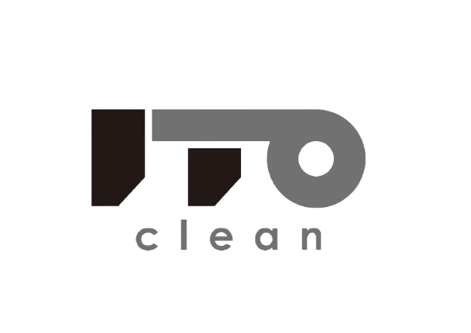

高圧洗浄のプロフェッショナル、伊都クリーン株式会社
伊都クリーン株式会社は、福岡県糸島市を拠点に、高圧洗浄機を使った清掃業を行なっております。活動地域は九州を中心に、**関西、関東圏にも対応しています**。
製紙工場、石油工場、化学工場など、プラント設備の洗浄を行い、効率的な運転をサポートします。
解体時に発生するダイオキシン類を安全に除去し、環境保護を実現します。
外壁や床面の洗浄を行い、耐久性向上と美観を保ちます。環境に優しい洗剤を使用し、リーズナブルに仕上げます。
実際の施工事例をご覧いただき、私たちの高圧洗浄技術をご確認ください。